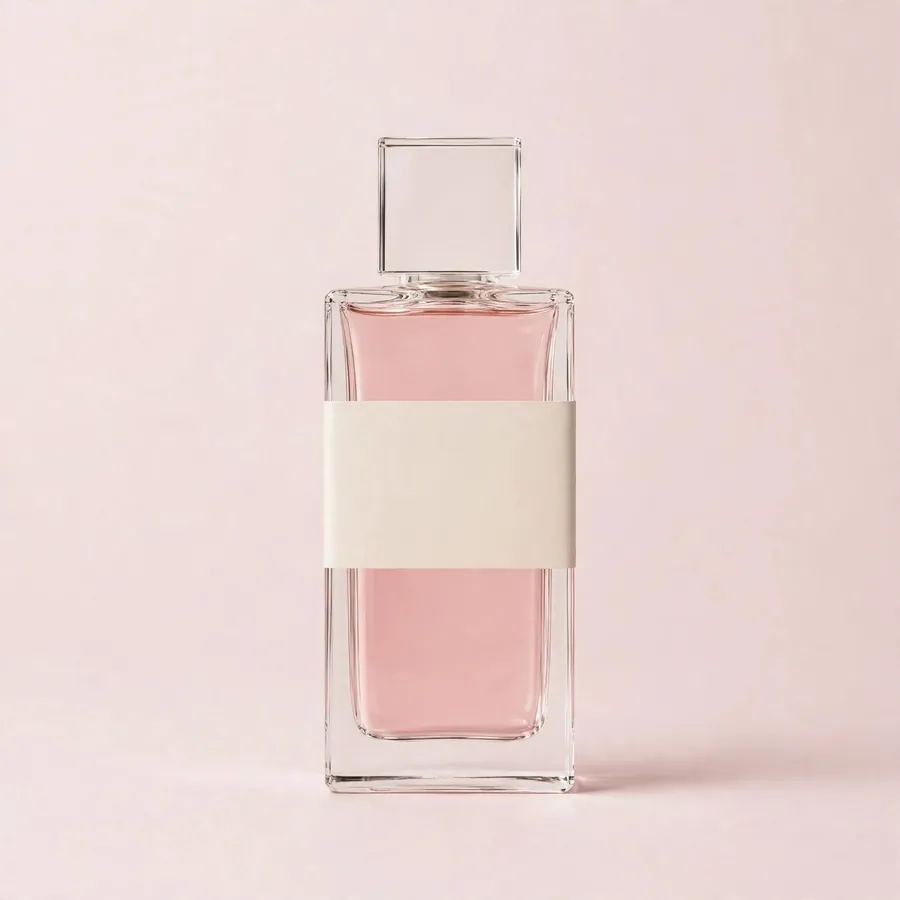

A conta que importa
Comprar perfume pela internet é um ato de fé. A gente tenta reduzir a fé ao mínimo.
Dez fragrâncias escolhidas uma por uma, em vez de um catálogo infinito com descrição copiada.
O frasco chega como saiu do distribuidor. Lote e validade impressos na caixa, para você conferir.
Direito de arrependimento do CDC, sem discussão. Se o perfume não for o que você esperava, devolve.
Sem contagem regressiva falsa, sem "últimas unidades" inventada. O frasco espera você.
O ritual
Três toques. Um no pulso, um atrás da orelha, um no ar à frente.
Perfume não se esfrega, se deixa pousar. Segure o botão e veja a pirâmide do Good Girl se abrir do jeito que acontece na pele: primeiro a saída, depois o coração, depois o que fica.
Leva três segundos. Solte antes e a pirâmide volta.
- Os primeiros minutosAmêndoa, café, bergamota
A saída é doce e amarga ao mesmo tempo. É o que a pessoa sente quando chega perto de você.
- Depois de uma horaJasmim, tuberosa, íris
O coração abre em floral branco. É o cheiro que fica na sala depois que você sai.
- No dia seguinteFava tonka, cacau, baunilha
O fundo é quente e adocicado. Fica no cachecol, no casaco, na lembrança.
A curadoria
Três frascos que explicam o resto da prateleira.
Noite, festa, ocasião que pede presença
Carolina HerreraGood Girl
O frasco mais fotografado da prateleira. Doce de amêndoa e café que vira floral branco. É o que a maioria leva quando quer acertar em cheio num presente.
Dia a dia, trabalho, quem gosta de doce
LancômeLa Vie Est Belle
Íris com pralinê. Doce sem ser infantil, e o mais elogiado por quem gosta de perfume gourmand. Fixa bem em pele normal a seca.

Assinatura, uso diário, tempo quente
ChanelCoco Mademoiselle
O chipre floral que atravessa décadas sem envelhecer. Para quem quer um perfume de assinatura, daqueles que a pessoa reconhece antes de ver você.
Dez perfumes na loja. Ver todos (abre em nova aba).
A estante
O que fica na prateleira de casa.
Cada frasco que entra na Moments passa pela mesma checagem: procedência do distribuidor, lacre, lote e validade. O que não passa, não entra, mesmo quando o preço é bom.
Guarde longe do sol e do calor. Perfume não estraga em seis meses, estraga em vidro de janela.
Perguntas que chegam todo dia
As dúvidas que travam a compra.
É original mesmo?
Sim. Os frascos vêm de distribuidor, lacrados, com lote e validade impressos na caixa. A Moments não trabalha com tester sem avisar nem com frasco aberto. Se o seu chegar diferente disso, você devolve e recebe o valor de volta.
E se o cheiro não fixar na minha pele?
Fixação muda com a pele de cada pessoa, com o clima e com a concentração do perfume. Um Eau de Toilette dura menos que um Eau de Parfum, e isso está escrito na página de cada frasco. Se ainda assim o perfume não for o que você esperava, o direito de arrependimento de 7 dias vale também neste caso.
Posso devolver se não gostar?
Pode, em até 7 dias corridos a partir da entrega, pelo direito de arrependimento do CDC. O frasco precisa voltar como chegou. A gente combina a coleta e devolve o valor integral.
Quando chega?
Londrina costuma receber em 1 a 3 dias úteis. Para o resto do Paraná, 2 a 5. Outros estados, de 3 a 8. O prazo exato aparece no checkout, depois do seu CEP, porque depende do frete.
O perfume vem com caixa e celofane?
Vem lacrado na caixa original da marca, com o celofane do distribuidor. A única coisa que a gente adiciona é a embalagem protetora para o transporte.
Como pago?
PIX com 3% de desconto, ou cartão em até 6 vezes sem juros. Acima disso, até 12 vezes com juros da operadora, e o valor de cada parcela aparece antes de você confirmar.
A escolha é sua
O frasco certo não precisa de você com pressa.
Dez perfumes na loja, cada um com a origem escrita. Escolha o seu, ou chame no WhatsApp que a Neusa ajuda a decidir.